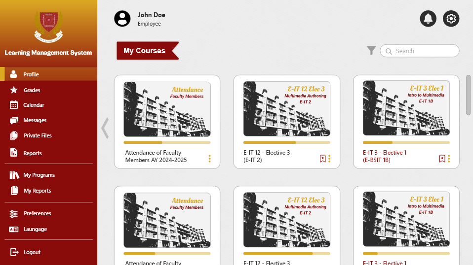
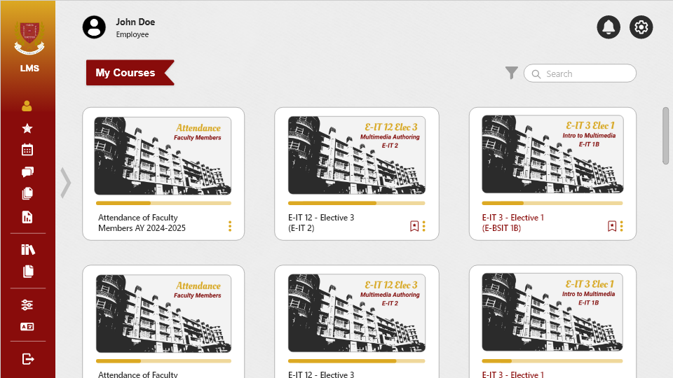
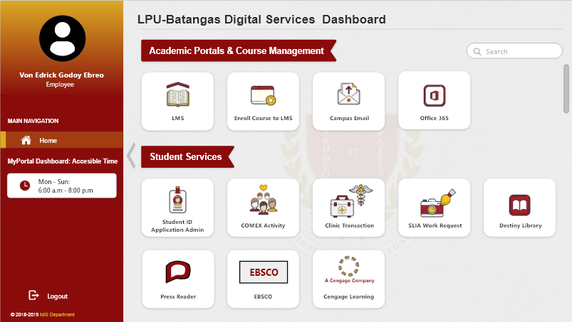
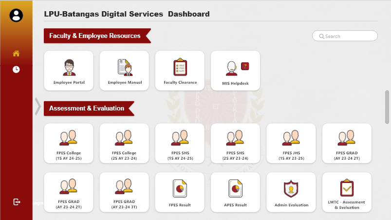
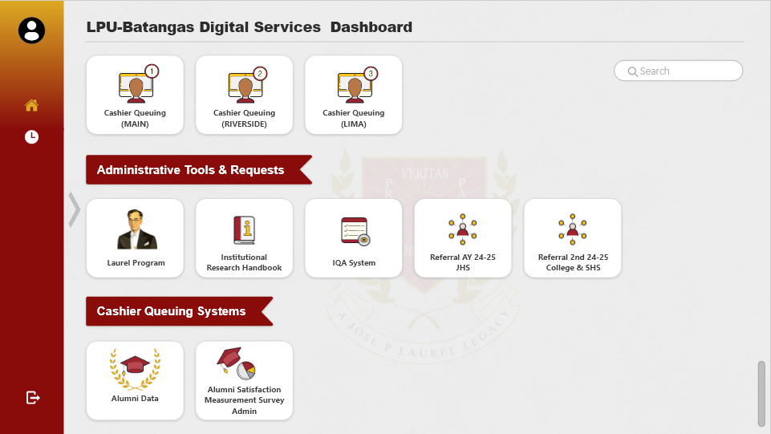

ACADEMIC ACTIVITY · APRIL 25, 2025
LPUB LMS &
Dashboard.
A class activity redesigning an LPU-B portal concept, built to explore Adobe XD as a prototyping tool for an employee-facing learning management system and a digital services dashboard.
01 — OVERVIEW
Exploring Adobe XD as a prototyping tool.
Our professor assigned this activity specifically to get us exploring Adobe XD's prototyping workflow, rather than to ship a finished product. The brief was to redesign an existing LPU-B portal concept — an employee-facing LMS and a digital services dashboard.
The screens below are the design exploration produced for that exercise.
02 — LMS FOR EMPLOYEE


03 — DIGITAL SERVICES DASHBOARD



